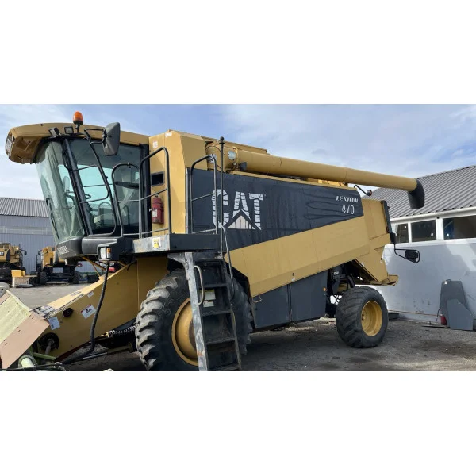
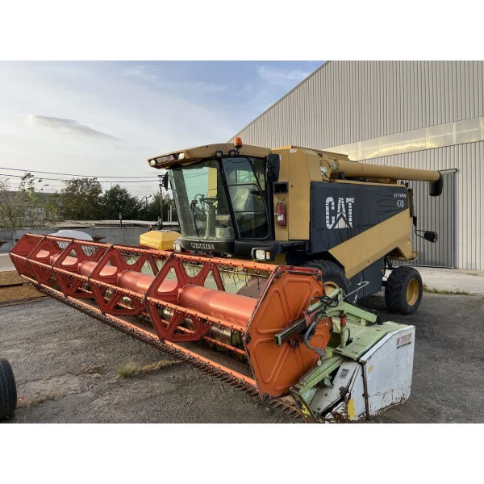
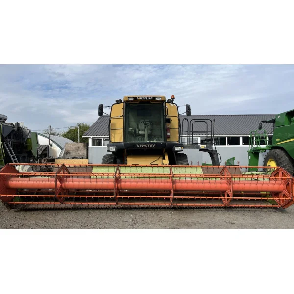
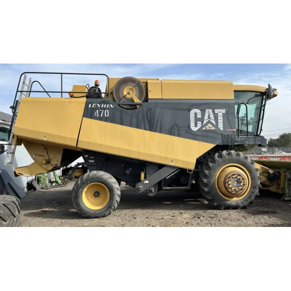

Характеристики:
- Двигун: 6-циліндровий, дизельний, потужністю 200 к.с.
- Тип охолодження: Водяне рідинне охолодження
- Трансмісія: Механічна, 4 передачі вперед та 1 назад
- Привід: Повний (4x4)
- Гідравлічна система: Є, з можливістю підключення навісного обладнання
- Колісна база: 2750 мм
- Вага: 10500 кг
- Максимальна швидкість: до 25 км/год
- Паливний бак: 275 літрів
- Колеса: Передні 500/60 R22.5, задні 600/65 R28
- Кабіна: Є, з захистом від пилу, кондиціонером та системою управління
- Гальмівна система: Дискові гальма в масляній ванні
- Додаткове обладнання: Можливість встановлення різних насадок для збирання врожаю
- Тип рами: Посилена рама для важких умов роботи
- Охолоджувач: Наявність охолоджувача повітря для роботи в жарких умовах
- Витрата пального: 12-15 л/година при максимальному навантаженні
- Обороти двигуна: 2200 об/хв
- Об'єм двигуна: 6.6 літра
- Ширина захоплення: 4.2 метра (залежно від насадки)
- Ємність бункера: 6000 літрів
- Тип пального: Дизельне паливо
- Електрична система: 24V, стартер
- Кут повороту: до 30 градусів
- Кількість фрез: Залежно від насадки (зазвичай 6-8 дискових фрез)
- Габарити: 10400 x 3000 x 4000 мм
Про товар:
Якщо ви шукаєте надійний і потужний зернозбиральний комбайн, зверніть увагу на модель CAT LEXION 470. Цей комбайн є оптимальним вибором для аграріїв, які прагнуть отримати максимальну ефективність збору врожаю. Модель 2000 року оснащена перевіреним двигуном від Caterpillar, що забезпечує стабільну роботу та економічне споживання палива.
Вартість оренди: 2000 UAH за день